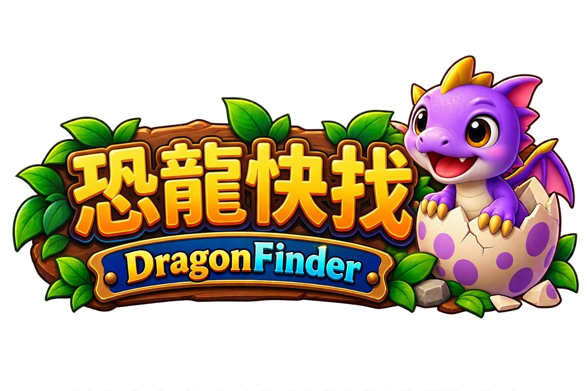
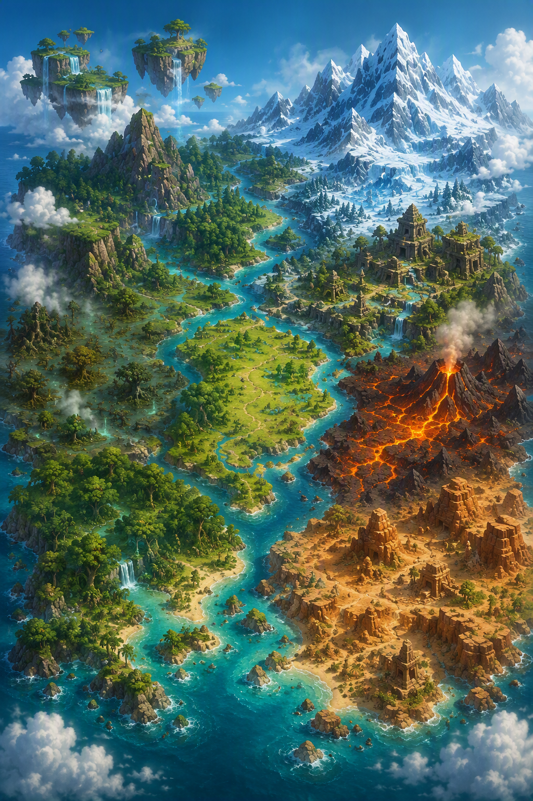

這次重寫要解決的問題：現有主線「星願燈塔危機」走懸疑感傷路線（被遺忘的影子龍、爺爺的贖罪），情感門檻偏高、與「開心找恐龍」的遊玩體驗有落差。新故事必須讓過關本身成為看故事的動力。

| 關卡 | 區域 | 地形關鍵字 | 時段氛圍 | 代表恐龍（現有圖鑑） | 建議主色 |
|---|---|---|---|---|---|
| 4×4 | 🌱 起源地 | 金色沙灘・海浪・恐龍蛋 | 日出暖金 | 薩爾塔龍、梁龍 | #f2d49b |
| 5×5 | 🌿 幼龍平原 | 開闊草地・育幼地 | 晴朗翠綠 | 三角龍、副櫛龍 | #a8d878 |
| 6×6 | 🍃 翠風草原 | 草浪・疾風・賽跑 | 晨風金綠 | 似鴯鶓龍、橡樹龍、無齒翼龍 | #7ec850 |
| 7×7 | ⛰️ 碎岩丘陵 | 岩谷迷宮・回音 | 午前赭色 | 腫頭龍、結節龍 | #c98a5b |
| 8×8 | 🌲 迷霧森林 | 濃霧・螢光蘑菇 | 藍綠昏暗 | 樹息龍、小盜龍、美頜龍 | #4f9e8f |
| 9×9 | 🌙 月光沼澤 | 月夜・水面倒影 | 深藍夜 | 棘龍、似鱷龍、普魯斯鱷 | #5a6fb5 |
| 10×10 | 🌵 烈陽峽谷 | 紅岩・熱浪・追逐 | 正午橙紅 | 食肉牛龍、瑪君龍 | #e07840 |
| 11×11 | ❄️ 霜牙雪嶺 | 暴雪・冰湖・極光 | 冷藍極光 | 艾伯塔龍、特暴龍 | #a8d4f0 |
| 12×12 | 🏛️ 古城遺跡 | 石柱・壁畫・機關 | 金沙塵光 | 戈壁龍、竊蛋龍、鷲龍 | #d9b96c |
| 13×13 | ⛩️ 雲海神殿 | 浮空島・鳥居・雲海 | 雲白鎏金 | 風神翼龍、古神翼龍、悟空翼龍 | #bcd9f5 |
| 14×14 | 🐉 龍之巔峰 | 最高峰・雲上王座 | 帝王金 | 超帝王龍、霸王龍、泰坦巨龍 | #f0c14b |
| 15×15 | 🌋 熔火龍穴 | 火山・熔岩・鍛造 | 熾橙黑 | 棘龍王、蠻龍、新獵龍 | #e05038 |
| 16×16 | 🏜️ 流沙王陵 | 流沙・陵墓・機關 | 金沙黃昏 | 敦煌龍、渝龍、黑龍江龍 | #e8c88f |
| 17×17 | 🌊 碧海龍宮 | 珊瑚・水晶宮・深海 | 水藍夜光 | 蛇頸龍、滑齒龍、海王龍、海霸龍 | #58b8d8 |
| 18×18 | 🐲 蒼穹龍境 | 天空之境・龍塔・極光 | 紫羅蘭極光 | 帝龍、哈特茲哥翼龍 | #b89ae8 |
| 方案 | 一句話概念 | 調性 | 核心收集象徵 | 最大賣點 | 留意點 | 最適合 |
|---|---|---|---|---|---|---|
| A 彩虹羅盤 | 集齊失落的探險隊羅盤碎片，找到「所有恐龍的樂園」 | 王道冒險・輕快熱血 | 15 枚彩色羅盤碎片 | 經典爽感最穩；「羅盤轉動指向下一區」把過關儀式感拉滿；與圖鑑收集主題最合 | 原創度中等（冒險公式成熟） | 想最大化大眾緣 |
| B 時光列車 | 修復墜毀的時光列車「諾亞號」，找回散落 15 區的沉睡乘客 | 奇幻科普・淡淡懸念 | 15 張車票＋15 節車廂 | 世界觀最原創、記憶點最強；「地圖＝環線、過關＝通車」結構最工整；隱藏的「第二列車」懸念撑起後半 | 列車美術素材量最大 | 想要市場記憶點 |
| C 尋龍盃 | 全大陸推理大賽開幕！15 站資格賽闖進龍塔總決賽 | 熱血競技・歡樂喜劇 | 15 枚賽區徽章 | 最貼玩法系統：區域戰績＝賽區成績、龍塔＝決賽場、留言板＝選手留言；勁敵三人組戲份最好看 | 需新增 2~3 位人類角色立繪 | 想強化留存與龍塔 |
| D 星塵牧場 | 代理牧場長的夏天：把迷路的恐龍一隻隻哄睡、送回家 | 治愈日常・親子 | 15 盞星星燈 | 最溫柔無痛；「晚安」儀式感適合睡前遊玩；每章一個小課題，單章完整度最高 | 戲劇張力最低，熱血玩家可能覺得平淡 | 親子客群・睡前場景 |
| # | 區域 | 章名 | 劇情（地圖連結・粗體＝現有圖鑑恐龍） | 章末鉤子（過關期待） | 畫面設計 |
|---|---|---|---|---|---|
| 0 | 🌟 序章 | 拾獲羅盤的早晨 | 你在爺爺的舊物箱翻到一張泛黃合影：探險隊站在大陸地圖前，圖釘釘著一枚彩虹羅盤。當晚羅盤竟出現在枕頭下，指針狂轉後指向窗外。你追到海邊，撿到半枚碎裂的羅盤與一顆淡藍的蛋——蛋殼浮出羅盤同款花紋，伴伴破殼而出。 | 羅盤指針「叮」地一聲，指向內陸深處。 | 閣樓暖黃→月夜海灘；羅盤金光特寫gold |
| 1 | 🌱 起源地 4×4 | 沙灘上的第一片彩虹 | 金色沙灘散落探險隊的補給箱（寶箱）。伴伴嗅出埋在沙裡的第一枚碎片，卻被愛亮晶晶的薩爾塔龍撿去當項鍊。你靠「哪裡最容易被當藏寶點」的推理找回碎片。 | 碎片背面刻著隊規第一條：「永遠，把恐龍當朋友。」 | 日出沙灘、淺灘倒影；羅盤鑲嵌特寫gold |
| 2 | 🌿 幼龍平原 5×5 | 迷路的小三角龍 | 草浪平原上，小三角龍哭著說牠追「會飛的碎片」跟丟了隊伍。你沿足跡推理找到牠，發現第二枚碎片躺在無齒翼龍的巢裡——翼龍媽媽一直以為那是顆蛋。溫馨歸還後，翼龍以飛行護送作謝禮。 | 高空俯瞰：第一次看見整張地圖與遠方雪山（終點視覺化）。 | 綠原風線、大地圖俯瞰鏡頭forest |
| 3 | 🍃 翠風草原 6×6 | 追風者的大賽跑 | 草原石碑記載：碎片三在「跑得最快的傢伙」巢裡。似鴯鶓龍三兄弟開出條件——先在草浪裡贏過牠們的捉迷藏賽。你用排除法圈出足跡路線，終點巢中碎片閃著綠光。 | 石碑背面有新抓痕：「別讓『收藏家』搶走羅盤」；天邊掠過一艘飛艇剪影。 | 金綠草浪、奔跑速度線、飛艇伏筆forest |
| 4 | ⛰️ 碎岩丘陵 7×7 | 回音谷的考驗 | 碎片四掉進會吃掉聲音的回音迷宮谷。守谷的腫頭龍放行條件：「腦袋清楚的傢伙才能進」。你在石壁回音中定位碎片（呼應排除法玩法），出谷時伴伴學會模仿回音，逗笑全場。 | 牆上刻著探險隊日記殘句：「集到一半我們才發現，樂園是有代價的。」 | 赭石岩壁、聲波圓環特效mystery |
| 5 | 🌲 迷霧森林 8×8 | 霧中燈火 | 濃霧森林五步外不見路。掛在枝頭當「燈」的樹息龍一族要你先救出被霧困住的小美頜龍。任務完成，最老的樹息龍爺爺交出碎片五，並說出牠見過的那個「把活恐龍做成標本的人」。 | 霧散的一瞬，谷外亮起格雷飛艇的探照光柱。 | 藍綠濃霧＋螢菇點光、遠景光柱forest |
| 6 | 🌙 月光沼澤 9×9 | 水面下的星空 | 碎片六沉在沼澤的「星星水潭」底，倒影裡星空與水底交錯。守潭的棘龍說水裡住著「愛收集石頭的傢伙」——掘龍把碎片當寶石收進了巢。你觀察牠搬石頭的路徑，推理出巢位一舉撈起。 | 撈起碎片時，倒影多了一道不屬於星星的光——飛艇已到沼澤上空。 | 深藍月夜、水面鏡像構圖、螢火粒子water |
| 7 | 🌵 烈陽峽谷 10×10 | 正午的追逐 | 格雷的手下在紅岩峽谷張網搶碎片！食肉牛龍警長帶你抄岩縫近路，用「互不相鄰」的走位避開捕獸網（玩法梗），反將飛艇引進熱氣流狼狽撤退。碎片七就藏在警長徽章背面——牠是當年探險隊恐龍夥伴的後代。 | 警長低聲說：「你爺爺……當年也這樣保護過我們。」——爺爺和探險隊有關？！ | 赤紅峽谷正午、追逐速度線fire |
| 8 | ❄️ 霜牙雪嶺 11×11 | 極光下的半張地圖 | 暴雪封山，你在雪洞裡找到探險隊營地遺址：半張地圖＋碎片八。日記寫著他們在巔峰看見「樂園之門」，但隊長決定不開——「門一開，就有人想把整個樂園搬回家。」極光亮起，伴伴額紋與羅盤共鳴，投影出隊長的側臉。 | 那側臉，像極了年輕時的爺爺——而他當年「沒能阻止另一個隊員開門」。 | 藍白雪嶺＋極光簾幕、雪洞暖火對比snow |
| 9 | 🏛️ 古城遺跡 12×12 | 壁畫裡的真相 | 古城壁畫記載：百年前「收藏家協會」想強開樂園之門，探險隊與恐龍們把「鑰匙」拆成 15 片藏遍大陸。碎片九嵌在王座機關裡，竊蛋龍盜團也聞風而來——一場古墓機關攻防戰開打。 | 壁畫最後一格被鑿掉，鑿痕很新……有人不想讓你們看到結局。 | 金沙石柱、壁畫長卷橫移、塵光粒子mystery |
| 10 | ⛩️ 雲海神殿 13×13 | 風之子的試煉 | 浮空神殿的風神翼龍三姊妹守著門的最後知識：「門只回應真心。」試煉是在翻湧雲海中找出「你真正想見的那根羽毛」（把找隱藏物玩成儀式）。通過後，三姊妹以高空氣流護送你們朝巔峰飛去。 | 姊妹臨別警告：「收藏家的飛艇已經先出發了——剩下的碎片，你必須比牠快。」 | 雲海日出金、浮空鳥居剪影、風流線sky |
| 11 | 🐉 龍之巔峰 14×14 | 王者的證明 | 巔峰雲霧中，守門的超帝王龍要求最終試煉：證明「尋找的眼力」。你在帝王們的注視下完成挑戰，霸王龍群讓出一條上山道。山頂留著探險隊最後的紀錄：爺爺把最後一枚碎片藏去了「連收藏家都想不到的地方」。 | 羅盤指針竟然指向——下方，海的深處。 | 雲上金光、巨大王者剪影俯瞰群山storm |
| 12 | 🌋 熔火龍穴 15×15 | 火中的答案 | 最後的碎片當年被投入火山，讓「貪婪之手永遠拿不到」。守著熔岩湖的棘龍王說：火焰會先映出「你最害怕的事」——你看見圖鑑被燒空、朋友變成標本的幻象，差點退縮；伴伴把爪子搭上你的手。 | 碎片取出、羅盤復原的同一刻——格雷的飛艇降落在火山口。 | 橙紅熔岩、火星粒子、幻象轉灰階fire |
| 13 | 🏜️ 流沙王陵 16×16 | 沙海遁走 | 飛艇追逐戰！你們跳上王陵的古陵滑道逃亡，把機關反過來變成陷阱；敦煌龍商隊出面斷後，格雷在沙暴中只撿到你們故意留下的「假羅盤」。 | 你們真正的目的地是海底——碧海龍宮。格雷發現上當，氣急敗壞。 | 金沙流動、陵墓滑道動感、沙暴轉海藍gold |
| 14 | 🌊 碧海龍宮 17×17 | 最初的鑰匙孔 | 龍宮水晶大殿的中央，就是「樂園之門」的鑰匙孔——原來樂園一直在大家的腳下與身邊。海霸龍開啟潮門讓你們入殿；格雷的飛艇破浪而入搶走羅盤強行轉動——門開了一半，卻開始把外面的恐龍「吸」進灰白的標本世界。 | 門只認「心」。你敢在最後關頭，把自己的願望讓給別人嗎？ | 水藍水晶宮、門縫白光、灰白侵蝕對比water |
| 15 | 🐲 蒼穹龍境 18×18 | 所有人心裡的樂園 | 終章。你沒有搶回羅盤，而是握住格雷的手一起按上門——你許的願是「讓想見恐龍的人，都能再見到牠們」。格雷愣住：小時候他也曾在海邊遇過一隻恐龍。門完全開啟，不是通往另一個世界，而是讓 15 區星光全部點亮——大陸本身成為樂園。伴伴額紋亮起：「下次旅行，換我帶路！」 | 後日談：龍塔頂端亮起一盞燈——那是給「下一場冒險」的信號。 | 極光＋15 色星光齊亮、全員合影構圖storm |
| # | 車站 | 章名 | 劇情（地圖連結・粗體＝現有圖鑑恐龍） | 章末鉤子（過關期待） | 畫面設計 |
|---|---|---|---|---|---|
| 0 | 🌟 序章 | 發車前的月台 | 你在車站舊書攤翻開一本空白票冊，周圍瞬間變成雲上老月台——蒸汽車頭「諾亞號」靜靜停著。伴伴從煙囪裡鑽出來：列車在穿越「大滅絕之夜」時墜毀，15 節車廂散落大陸，乘客們沉睡至今。集齊 15 把月台鑰匙，就能載大家「抵達明天」。 | 票冊自動浮現第一張票：起源地站，發車在即。 | 現實車站→雲上月台轉場、蒸汽星夜mystery |
| 1 | 🌱 起源地 4×4 | 海濱月台的第一聲汽笛 | 車廂一停在金色沙灘，月台鑰匙被愛撿貝殼的薩爾塔龍寶寶埋進了沙堡。你推理出「最气派的沙堡在哪」取回鑰匙，喚醒車廂裡沉睡的孔子鳥晨鳥團。 | 鳥群醒來齊飛繞車頭三圈，諾亞號的汽笛第一次鳴響。 | 日出月台、燈箱亮起、汽笛白煙gold |
| 2 | 🌿 幼龍平原 5×5 | 草原上的新住民 | 車廂二卡在草原中央，三角龍一家把車廂當新家，不肯讓拆。你幫牠們找到更棒的樹蔭「新家」，換得通行權與鑰匙。副櫛龍三胞胎醒來的第一件事，是在月台上開演唱會。 | 遠方傳來另一節車廂的汽笛回音——有車廂「自己醒了」？ | 草原彩繪車廂、音符粒子forest |
| 3 | 🍃 翠風草原 6×6 | 風的號誌燈 | 草原站號誌燈失明，大風一吹列車就看不清前路。全草原跑最快的站務員似鴯鶓龍帶你收集「風的羽毛」——在翻滾草浪中用排除法找出四根發光羽毛，修好號誌，鑰匙就藏在燈座裡。 | 號誌亮起的瞬間，遠方雪嶺閃過一下藍光——像求救信號。 | 風車草浪、羽毛光點、遠景藍光gold |
| 4 | ⛰️ 碎岩丘陵 7×7 | 落石隧道 | 丘陵隧道被落石封死。腫頭龍養路工班用頭槌開路，但要你先「敲聽回音、推理出哪塊石頭是空的」。隧道打通，車廂四裡的結節龍裝甲兵睡夢中還在滾，堵得水泄不通。 | 隧道深處牆上有巨大爪痕——不是恐龍的，是「那一夜」留下的。 | 隧道暖燈對洞口天光、石屑粒子mystery |
| 5 | 🌲 迷霧森林 8×8 | 霧笛與螢光之夜 | 濃霧中列車寸步難行，得靠「霧笛」——但霧笛被小盜龍惡作劇團拆成五塊藏進森林。霧裡只看得見聲音的來向，你循聲追回五塊零件。霧笛修好、長鳴一聲，整座森林的螢光蘑菇應聲齊亮。 | 笛聲的餘韻裡，夾著一個微弱的回應——來自沼澤深處。 | 藍綠濃霧＋螢菇齊亮名場面forest |
| 6 | 🌙 月光沼澤 9×9 | 沼澤裡的幽靈列車 | 傳說沼澤有幽靈列車——其實是車廂六半沉潭中，車燈還亮著，月光下像極了幽靈。守潭的棘龍站長在等車廂裡的老朋友；而「鬼影」本尊是睡過頭的普魯斯鱷，醒來尷尬得把水攪出了漩渦。 | 老鱷魚交出半張燒焦的行車時刻表：「出發那晚，我們不是只有一列車。」 | 月夜沼澤、車燈光暈、水霧粒子water |
| 7 | 🌵 烈陽峽谷 10×10 | 四十度的月台 | 峽谷熱到鐵軌變形。扳道工食肉牛龍說：正午前修不好遮陽棚，列車會卡死在谷底。你在紅岩間收集「陰影碎片」（石柱影子位置的推理謎題）。乘客瑪君龍樂團睡醒就在月台上開演。 | 熱浪讓時刻表顯出隱形字——第二列車的名字：「厄科號」。 | 赤紅峽谷正午、熱浪扭曲特效fire |
| 8 | ❄️ 霜牙雪嶺 11×11 | 雪崩與藍光 | 循藍光上山：是被雪崩埋住的車廂八，藍光是車內應急燈。長相兇惡的艾伯塔龍其實一直默默幫忙挖雪（外冷內熱的雪原暖男）。救出的樹息龍們抱團取暖，毛絨絨一大球。 | 車廂八的車票全被撕過又黏回去——有乘客「不想去明天」？ | 藍白雪原＋應急燈藍光、極光簾幕snow |
| 9 | 🏛️ 古城遺跡 12×12 | 消失的第九節 | 古城壁畫記載：列車原本有 16 節，第九節是「禁忌車廂」被封存——它載的不是動物，是「不能帶去明天的東西」：大滅絕的記憶。戈壁龍考古隊幫你解讀機關文書，鑰匙就壓在王座之下。 | 壁畫落款是「厄科號車長」——第二列車真的存在。 | 金沙壁畫長卷、機關齒輪、塵光mystery |
| 10 | ⛩️ 雲海神殿 13×13 | 天空的轉轍器 | 列車要開上雲海？神殿原來是「天空轉轍站」，風神翼龍三姊妹掌管軌道，放行條件是見習車長的「風中找羽」試煉。通過後，鐵軌從雲層裡一段段亮起——雲海鐵橋通車。 | 轉轍器指向巔峰時卡住了——有人提前把它扳去了別的方向。 | 雲海鐵橋日出金、風流線sky |
| 11 | 🐉 龍之巔峰 14×14 | 終點站的謊言 | 巔峰車站空無一人，站牌寫著「終點・明天」。老站長超帝王龍坦白：當年設計者發現「新世界」根本不存在，只好把終點設在最高處——「至少這裡，天天看得到日出」。你決定不拆穿謊言，而是把「明天」變成真的：讓這片大陸本身成為新世界。 | 老站長交出最後的鑰匙——但「車頭之心」還在熔火龍穴的熔岩裡。 | 雲上車站、巨大剪影、日出金光storm |
| 12 | 🌋 熔火龍穴 15×15 | 淬火之心 | 車頭之心（發動爐心）墜入火山。鍛造師棘龍王一家說：爐心要「重新淬火」——火焰會映出你心底的恐懼與願望。你看到大家都抵達明天、唯獨沒有你的位置的幻象；伴伴拉住你的手：「才不會！」爐心重新亮起。 | 爐心點火的瞬間，15 站的燈同時亮起——最後一站的方向：海底。 | 熔岩橙紅＋爐心金光、火星粒子、幻象灰階fire |
| 13 | 🏜️ 流沙王陵 16×16 | 被埋葬的厄科號 | 海底月台的入口在王陵之下？流沙退去，露出第二列車的殘骸——厄科號。當年牠為諾亞號擋下隕石碎片而墜毀，乘客早已疏散、融入各地的恐龍社會；王陵其實是牠的紀念墓。守陵的敦煌龍把厄科號的車鈴交給你：「帶去終點吧，讓大家知道——沒有誰被忘記。」 | 地下水路轟然開啟，通往碧海龍宮。 | 沙下殘骸、金色沙瀑、悼念燭光gold |
| 14 | 🌊 碧海龍宮 17×17 | 最老的乘客 | 龍宮月台是全線最古老的一站，最後兩位乘客是 5 億歲的奇蝦與海口魚——牠們早就醒了，只是太小太安靜，一直沒被找到。海王者們（海霸龍、蛇頸龍）全體讓道，恐龍們沿著海岸線排成人牆，護送兩位小乘客上車。 | 全員乘車完畢——但發車，需要一位車長的宣言。 | 深海水晶月台、奇蝦特寫、氣泡光點water |
| 15 | 🐲 蒼穹龍境 18×18 | 發車！諾亞號 | 終章。你站上車頭舉起票冊宣言：「本列車的終點不在遠方——就在這裡，大家一起活著的每一天！」15 節車廂的燈全亮（乘客名冊＝圖鑑全亮），列車鳴笛出發——卻不是離開，而是沿雲海鐵橋繞行大陸一週，車窗裡閃過 15 站的風景與每一章的朋友，最後停在雲上，成為永遠的「環大陸觀光列車」。伴伴把票冊還你——第一頁寫著你的名字：正式車長任命書。 | 龍塔亮燈——「龍塔急行線，下個月開通！」 | 極光＋全車廂亮燈、繞行大陸蒙太奇、汽笛煙花storm |
| # | 賽區 | 章名 | 劇情（地圖連結・粗體＝現有圖鑑恐龍） | 章末鉤子（過關期待） | 畫面設計 |
|---|---|---|---|---|---|
| 0 | 🌟 序章 | 外卡資格 | 你和伴伴在海灘玩捉迷藏，秒解了尋龍盃巡迴宣傳車的謎題，被主辦方「主席」當場欽點外卡資格：15 站資格賽、集徽章、上龍塔。勁敵登場：布雷克的招牌飛吻全場尖叫，艾莉只留下一句「運氣不算實力」。而主席的斗篷下——露出一截龍尾巴。 | 主辦方竟然是恐龍？這場大賽不簡單。 | 海灘開幕式、煙火、賽旗拱門gold |
| 1 | 🌱 起源地 4×4 | 沙灘熱身賽 | 賽題：在金色沙灘區找出大會吉祥物玩偶。你輕鬆奪冠（新手教學關），布雷克被貝殼絆倒意外墊底，當場摔了望遠鏡。評審薩爾塔龍奶奶偷偷對你比讚。 | 艾莉遞來一頁分析筆記：「下一站，讓我看看你是實力還是運氣。」 | 沙灘賽場彩旗、頒獎台逆光gold |
| 2 | 🌿 幼龍平原 5×5 | 評審長的刁難 | 平原賽區評審是挑剔的梁龍媽媽，臨時加題：限時找回跑散的三隻小恐龍。你用區塊排除法漂亮完賽，艾莉同分——兩人第一次互相打量對方。 | 布雷克抗議賽題太簡單；主席宣布：下一站起，「傳說級賽題」登場。 | 草原競技場、計分板特寫forest |
| 3 | 🍃 翠風草原 6×6 | 疾風障礙賽 | 邊跑邊推理的障礙賽！搞笑擔當似鴯鶓龍選手一路搶戲。你和艾莉並排衝線、並列第一，布雷克第三——牠的搭檔食肉牛龍卻被伴伴看到偷偷在起點做手腳。 | 這傢伙在耍陰的？下幾站要小心。 | 障礙賽道、奔跑跟拍鏡頭forest |
| 4 | ⛰️ 碎岩丘陵 7×7 | 回音谷計時賽 | 傳說級賽題①：在會吃掉聲音的回音谷裡，找出「唯一還在發聲的目標」。布雷克靠蠻力亂撞出醜，你靠回音規則取勝——牠卻惡人先告狀說你犯規。 | 主席裁決「證據不足、成績保留」——你注意到，主席一直在暗中記錄你的推理方式。 | 岩谷聲波環、裁判席俯視mystery |
| 5 | 🌲 迷霧森林 8×8 | 霧中目擊者 | 傳說級賽題②：整片濃霧裡只有一位「目擊者」知道答案。小盜龍目擊者的提示只有氣味與方向，你一步步圈出範圍完賽；買通線報作弊的布雷克被當場抓包，搭檔禁賽一場。 | 夜裡，蒙面龍出現在營地外看你練習，留下一枚舊徽章——編號 000。 | 霧林追蹤、螢光提示、徽章特寫mystery |
| 6 | 🌙 月光沼澤 9×9 | 月光夜間賽 | 夜賽！賽題只在月光下浮現（水面倒影謎題），毒舌嘴軟的普魯斯鱷評審全程緊張到沉浮不定。你和艾莉首次聯手、又暗自較勁——同時完賽，大會宣布：並列第一。 | 深夜撞見獨自加練的布雷克——原來牠比誰都在乎。 | 月光水面、燈籠夜賽、倒影構圖water |
| 7 | 🌵 烈陽峽谷 10×10 | 灼熱懸崖賽 | 傳說級賽題③：正午石柱的影子會指向目標——只給一次機會。瑪君龍啦啦隊把氣氛炒到最高。搭檔回歸的布雷克像變了個人，配合脫胎換骨；你們三人首次並肩過關。 | 艾莉收到匿名信：「決賽前，小心主席。」 | 赤岩正午、影子長短謎題視覺fire |
| 8 | ❄️ 霜牙雪嶺 11×11 | 冰湖計時賽 | 極光下的雪地足跡賽。地主選手艾伯塔龍熱情到可怕（拉你合影三小時）。你的積分登上大會第一名；掉到第三的艾莉收到你遞的暖暖包——宿敵之間的溫柔。 | 主席宣布特別規則：最後四站改雙人組隊賽，隨機抽搭檔——你和布雷克一組！ | 極光冰湖、足跡發光序列snow |
| 9 | 🏛️ 古城遺跡 12×12 | 機關協力賽 | 古墓機關要兩人同時解開兩半線索。從互相嫌棄到默契漸生，布雷克坦白：家族三代都是尋龍盃亞軍，牠輸不起。你說：「那就在決賽，一起拿第一。」壁畫記載 20 年前也有位「從外卡打到決賽」的傳奇——編號 000。 | 傳奇的下半段故事，被一層沙塵蓋住了。 | 機關雙人互動、壁畫閃回mystery |
| 10 | ⛩️ 雲海神殿 13×13 | 風之三姊妹賽道 | 換搭檔，與艾莉組隊闖風神翼龍三姊妹設計的空中賽道。賽後艾莉正式下戰帖：「決賽我不會讓你。」雲上你偷聽到主席對蒙面龍說：「那孩子跟你當年一樣。」——外卡報名表，是蒙面龍親自挑的！ | 半決賽場地公布：龍之巔峰。 | 雲上賽道、三姊妹彩帶、逆光對話sky |
| 11 | 🐉 龍之巔峰 14×14 | 半決賽・王座前 | 榮譽裁判超帝王龍坐鎮巔峰賽場，你和艾莉、布雷克三方廝殺到最後一題——三人同分，史上首次「三人決賽」！看台上的布雷克父親只冷冷留下一句：「別又拿第二。」 | 決賽地點：龍塔頂層。同時，龍塔從未開放的頂層悄悄亮了燈。 | 巔峰賽場、三方對峙構圖、雲海storm |
| 12 | 🌋 熔火龍穴 15×15 | 賽前特訓與真相 | 你到龍穴找 20 年前決賽的裁判棘龍王特訓，聽到全案真相：當年的冠軍帝龍在決賽中途棄賽消失——因為牠發現大賽被「收藏家贊助商」操控，冠軍被迫交出找到的傳說恐龍。牠蒙面抗爭 20 年，把大賽贖了回來——主席制度就是牠建立的。 | 但今年的贊助商名單上，那個家族的名字又出現了。 | 熔岩鍛鍊場、往事黑白閃回fire |
| 13 | 🏜️ 流沙王陵 16×16 | 資格保衛戰 | 收藏家家族重金施壓，以「外卡程序瑕疵」要拔掉你的資格！敦煌龍法律顧問團出動，前 14 站結識的朋友——梁龍媽媽、似鴯鶓龍、小盜龍……聯名出庭作證。布雷克的父親也在公聽會上，第一次為兒子鼓掌。 | 資格保住了；決賽前夜，艾莉的必勝筆記卻被偷了。 | 公聽會審判感、金沙法典、朋友群像gold |
| 14 | 🌊 碧海龍宮 17×17 | 龍宮風波 | 追到龍宮：偷筆記的不是人類，是擔心艾莉「太緊張會生病」的迅猛龍搭檔（蠢萌關心大作戰）。誤會解除、筆記歸還，順手救出被漁網困住的小魚龍。龍宮壁畫記載：龍塔頂封存著「最初的比賽之龍」——決賽的謎題，就是牠。 | 決賽的謎題本身，是一隻恐龍。 | 龍宮追逐喜劇、網中救援、水晶光water |
| 15 | 🐲 蒼穹龍境 18×18 | 決賽・龍塔之頂 | 終章。龍塔 2000 層頂，總決賽賽題：「找出帝龍當年藏起來的東西。」三人沿著整座龍塔埋藏的線索各自推理——布雷克的膽識、艾莉的縝密、你的直覺，最後同時舉起手，答案只有一個：朋友。蒙面龍摘下面具＝帝龍，親手為三人掛上史上首批「三冠王」金牌；收藏家家族的陰謀當眾揭穿、當眾失效。煙火中，伴伴胸前的外卡翻面——背面刻著「No.000 永遠的搭檔」。 | 主席宣布下屆新增雙人組隊制——畫面定格在你與伴伴擊掌。 | 龍塔頂決賽、面具揭曉、煙火合影storm |
| # | 區域 | 章名 | 劇情（地圖連結・粗體＝現有圖鑑恐龍） | 章末鉤子（過關期待） | 畫面設計 |
|---|---|---|---|---|---|
| 0 | 🌟 序章 | 星星燈塔的委託 | 你收到一封信與一枚舊星星鈴鐺：龍奶奶要出遠門環遊大陸，拜託「阿嬤的孫子」代班星塵牧場一個夏天。牧場夜空掛著 15 盞星星燈，各對應一個區域——燈亮著，迷路的恐龍就找得到回家的路。但今晚第一盞燈忽明忽暗。伴伴是牧場的見習守夜龍。 | 龍奶奶留言：「燈是靠『晚安歌』點亮的。歌詞我忘了——要靠你一路跟恐龍們學回來。」 | 黃昏牧場全景、15 盞星燈、鈴鐺特寫gold |
| 1 | 🌱 起源地 4×4 | 第一夜・海風搖籃曲 | 沙灘上的小薩爾塔龍睡不著——牠怕海浪聲。你陪牠聽了一整夜，發現浪聲有節奏；梁龍奶奶教你們把浪聲唱成搖籃曲第一段。小龍睡著的瞬間，第一盞星燈亮了。 | 夜空裡，多了一顆新的星星。 | 月下海灘、浪光粒子、小小的身影依偎water |
| 2 | 🌿 幼龍平原 5×5 | 不想睡的三胞胎 | 副櫛龍三胞胎白天玩太瘋，晚上輪流裝睡，三角龍媽媽瀕臨崩潰。你發明「數星星入眠法」（一格一顆星，數隱藏物梗），三胞胎比誰先睡著——十秒內全滅。 | 學到第二段歌；平原盡頭卻有隻恐龍整夜繞圈走，像在找什麼。 | 草原星空、三胞胎疊羅漢睡姿forest |
| 3 | 🍃 翠風草原 6×6 | 夢遊的橡樹龍爺爺 | 繞圈的是夢遊的橡樹龍爺爺——夜夜夢回年輕時的遷徙路。你陪牠安安全全「遷徙」了一夜（護送關卡），天亮時牠笑著醒來：「原來我早就到家啦。」草原的風教你們第三段：風的口哨。 | 伴伴跟著吹口哨，星燈二、三一起變亮——原來這首歌，是要合奏的！ | 晨光草原、口哨音波、風的線條sky |
| 4 | ⛰️ 碎岩丘陵 7×7 | 打呼震落石的腫頭龍 | 腫頭龍大哥的呼聲震得碎石滾落，整座丘陵沒人敢睡。全員出動「側睡矯正大作戰」爆笑連連，最後是你把第四段改成搖滾版牠才聽得懂——打起了小呼嚕。 | 星燈四亮起時，遠方森林的黑影裡傳來小小的哭聲。 | 岩丘月色、呼嚕音浪的搞笑視覺mystery |
| 5 | 🌲 迷霧森林 8×8 | 怕黑的小美頜龍 | 森林太暗，小美頜龍不敢回家。樹息龍一族把羽毛做成小夜燈，螢光蘑菇一路點到洞穴口。第五段是「光的歌」——一句一句，把螢菇唱亮。 | 小龍睡了，卻說夢裡有「好大好大的一雙眼睛」在沼澤看她。 | 暗森林＋螢菇光路、羽毛夜燈forest |
| 6 | 🌙 月光沼澤 9×9 | 沼澤的大眼睛 | 傳說的「眼睛」是棘龍奶奶——夜視太好，老被誤會成怪物，孤單了很久。你們陪她泡月光溫泉聊天，她教第六段：水的低音。這一夜，整座沼澤第一次睡得安安穩穩。 | 龍奶奶寄來明信片：她在別的區域也聽見「走調的晚安歌」……還有別的代班牧場？ | 月溫泉霧氣、低音漣漪水面water |
| 7 | 🌵 烈陽峽谷 10×10 | 午睡大作戰 | 峽谷白天熱到睡不著、晚上又嗨到睡不著。食肉牛龍警長拜託你幫全谷排班午睡（時間規劃小關卡）。第七段：熱風的節奏——手掌打大腿的拍子，全谷睡成一幅名畫。 | 點名時少一隻：愛冒險的小牛龍追著「會飛的光」跑進了雪嶺方向！ | 紅岩午後、集體午睡名畫構圖fire |
| 8 | ❄️ 霜牙雪嶺 11×11 | 追光的小牛龍 | 那道「會飛的光」是極光碎片。艾伯塔龍雪巡隊和小牛龍玩成一團雪仗，你們把極光碎片做成雪嶺第一盞「冰星星燈」。第八段是全曲最溫柔處：雪的靜音拍。 | 冰燈照出雪地上一串「回頭望向牧場」的腳印——有誰想去牧場，卻不敢去。 | 極光雪原、冰燈藍光、腳印特寫snow |
| 9 | 🏛️ 古城遺跡 12×12 | 睡在圖書館的戈壁龍 | 戈壁龍博士失眠三十年，靠研究「古代搖籃曲碑文」助眠屢戰屢敗。你們帶來的八段歌讓牠一覺到天亮，牠哭了——碑文裡還有第九、十段的線索。 | 碑文最後一行寫著：「第十五段，不是用唱的。」 | 金沙圖書館、碑文發光、塵光mystery |
| 10 | ⛩️ 雲海神殿 13×13 | 雲上的搖籃曲 | 風神翼龍三姊妹守著「天空搖籃曲」的最後傳承，傳說「唱給雲聽，雲會記得」。你們在雲海黎明合唱九、十段，雲海翻湧成浪（名場面）。 | 龍奶奶的明信片：「我最後一站是蒼穹龍境。那裡有一隻龍——三十年沒睡過了。」 | 雲海合唱、日出金、雲浪翻湧sky |
| 11 | 🐉 龍之巔峰 14×14 | 王者失眠記 | 三十年沒睡的就是巔峰的超帝王龍——身為最強者，「閉上眼睛」等於示弱，全大陸都靠牠清醒守護。你什麼大道理都沒講，只是陪牠坐了一整夜，唱了前面幾段。天亮時，牠靠著山打起了呼。 | 牠託你帶話去龍穴：「告訴老棘，我輸了——輸給搖籃曲，真開心。」 | 雲上王者側臉、第一個安穩的黎明storm |
| 12 | 🌋 熔火龍穴 15×15 | 熔岩工房的節奏 | 鍛造師棘龍王白天打鐵太吵、晚上自己失眠只能一直打鐵。你們把打鐵聲「編進」第十一、十二段——鐵匠搖籃曲誕生，錘聲變節拍器。 | 鐵砧下壓著一張舊樂譜殘頁——「星塵牧場・創校之歌」？牧場的過去不簡單。 | 熔岩工房、火星與音符共舞fire |
| 13 | 🏜️ 流沙王陵 16×16 | 搖籃曲的起源 | 依樂譜殘頁深入王陵：「晚安歌」源自古代安眠祭——古恐龍們相信，唱給離開的同伴聽，牠們就會化作星星守護睡著的孩子。第十三、十四段在祭壇補完。 | 祭壇上刻著阿嬤的名字——阿嬤，是最後一位安眠祭歌者。 | 陵墓燭光、星圖穹頂、金沙瀑布gold |
| 14 | 🌊 碧海龍宮 17×17 | 海底的星星 | 最後兩段旋律藏在「會唱歌的珍珠」裡，但珍珠只為「真心想讓誰睡個好覺」的人亮。你想起這一整個夏天陪睡過的每一隻小龍——珍珠亮了。海霸龍與蛇頸龍們全體出動護送上岸。 | 十五段齊了——但第十五段「不是用唱的」，到底是什麼？ | 珍珠光暈深海、氣泡音符、龍宮列隊water |
| 15 | 🐲 蒼穹龍境 18×18 | 第十五段・不是用唱的 | 終章。龍奶奶回來了，帶你們登上蒼穹龍境最高處。第十五段的答案：全大陸的恐龍「一起睡著」的樣子，就是歌本身——你點亮十五盞星燈，各地夥伴接力把十五段傳回家鄉（蒙太奇：每一章的朋友在各自的家鄉安然入睡），大陸第一次在同一天夜晚整片睡著，星空亮得像下星星雨。阿嬤與龍奶奶相擁而笑；你把星星鈴鐺掛上燈塔——「明年的夏天，也拜託你囉，代理牧場長。」 | 後日談：圖鑑裡每隻恐龍的名字旁都多了一顆小星星——牠們都到過你的夢裡。 | 全大陸熄燈入眠俯瞰、星空雨、鈴鐺搖曳storm |
新故事的演出舞台完全沿用現有 #story-stage 系統，以下規範讓 16 張新場景卡「換皮不換骨」，程式改動最小。
四案共用同一套替換流程，不需要動任何存檔結構與玩法程式：
| 項目 | 內容 |
|---|---|
| 劇情本文 | 替換 game_db/js/main.js 內的 STORY 陣列（lv:0 與 4~18 共 17 條的 title / text / cast）。解鎖流程（首次過關播放、序章開場自動播）原樣保留。 |
| 心情映射 | 更新 playStoryText() 內的 moodByLv 對照表（各案章節表已標好每章 mood）。 |
| 場景卡 | 重繪 16 張 game_db/assets/story/s0.svg ~ s18.svg（檔名不變）；生產流程可沿用現有 AI+人工修整管線（產出先放 working_db/generated_assets/）。 |
| cast 立繪 | 全部使用現有圖鑑圖（MON_BY_ID id）；伴伴 id=1000。各案每章 cast 由該章登場恐龍對應 id 組成，最多 5 位。 |
| 影片（可選） | 關鍵章 1~2 支 720p MP4，加入 STORY_VIDEOS 映射即可。 |
| 存檔相容 | dinodoku-story 以關卡為 key 記錄「已觀看」。換故事後：新玩家直接看新劇情；舊玩家不會重播（如需全員重看，工程模式可清存檔，或屆時升版 key）。 |
| 既有小問題（選配修） | openStory() 清單目前只列到 13×13（lv>13 直接 return），14~18 章只能靠解鎖自動播、無法回看——換新故事時建議一併放寬。 |
| 工作量估算 | 文案 17 段（已備）＋16 張 SVG 場景＋（選）1~2 支影片＋（選）方案 C 人類角色立繪 2 張。SVG 為主要工期。 |